+ BOOKS
books - as a part of: vilhelm lauritzen architects
projects in architecture practices
100 Years of Danish Contemporary / Moderne i 100 år
(2022)
for Vilhelm Lauritzen Architects
as a part of the design team
.
project partners:
gyrithe saltorp
torsten stephensen
anne møller sørensen
.
design team
jane wirenfeldt nielsen
camilla frellsen
jakob holmqvist larsen
.
Publisher
Strandberg Publishing
.
author
Christian Bundegaard
.
graphics
Troels Faber NR2154/CPH
.
photos
Strandberg Publishing
Copenhagen Contemporary
(2022)
for Vilhelm Lauritzen Architects
as a part of the design team
.
project partner
thomas scheel
.
design team
jane wirenfeldt nielsen
jakob holmqvist larsen
.
publisher
Arvineus+Orfeus
.
editor
Tomas Lauri
.
photos by sjavit maestro
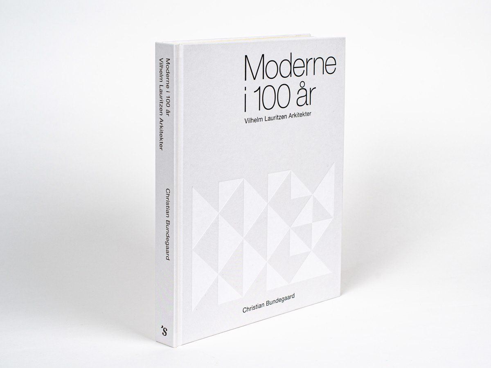
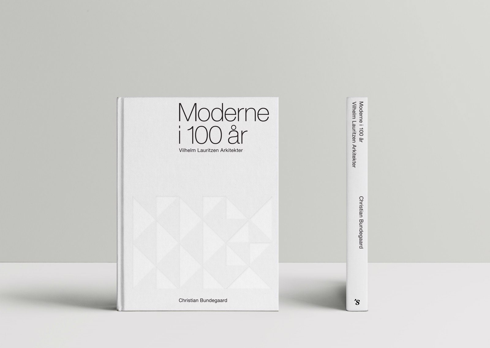
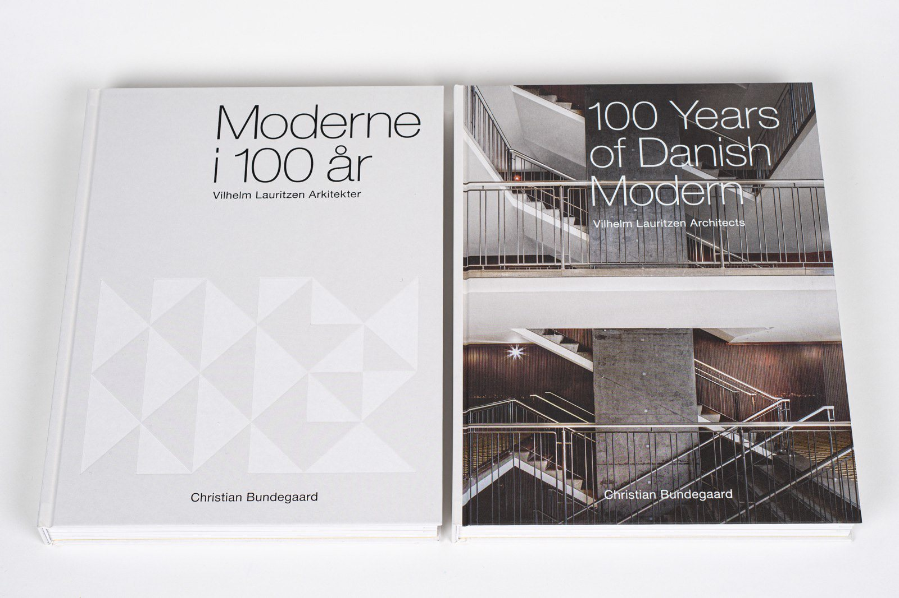
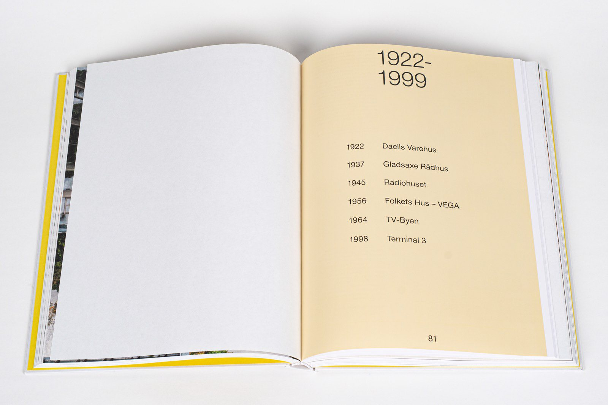
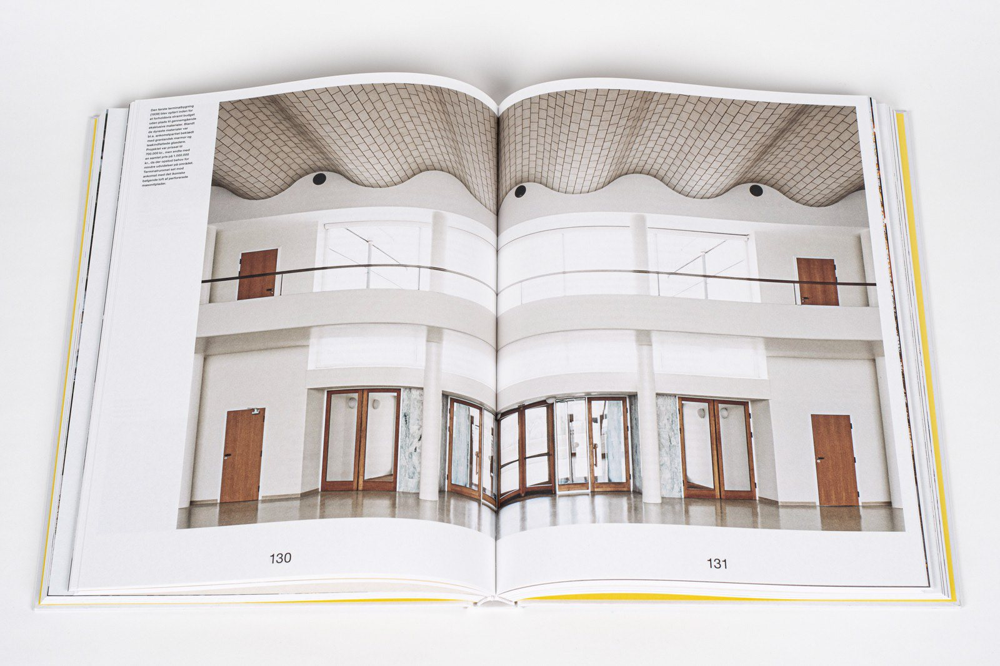
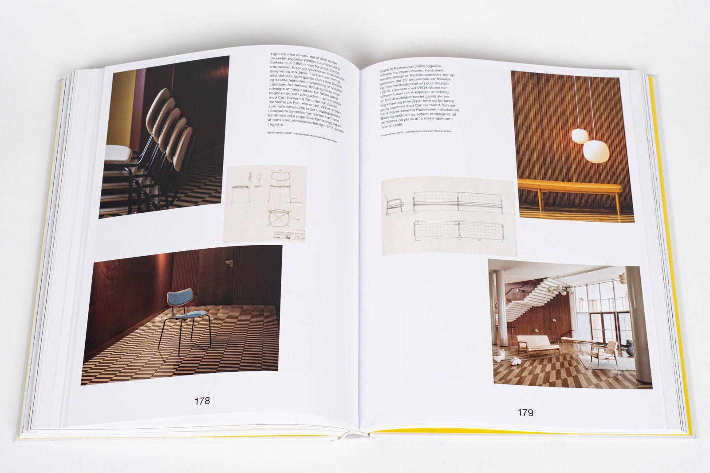
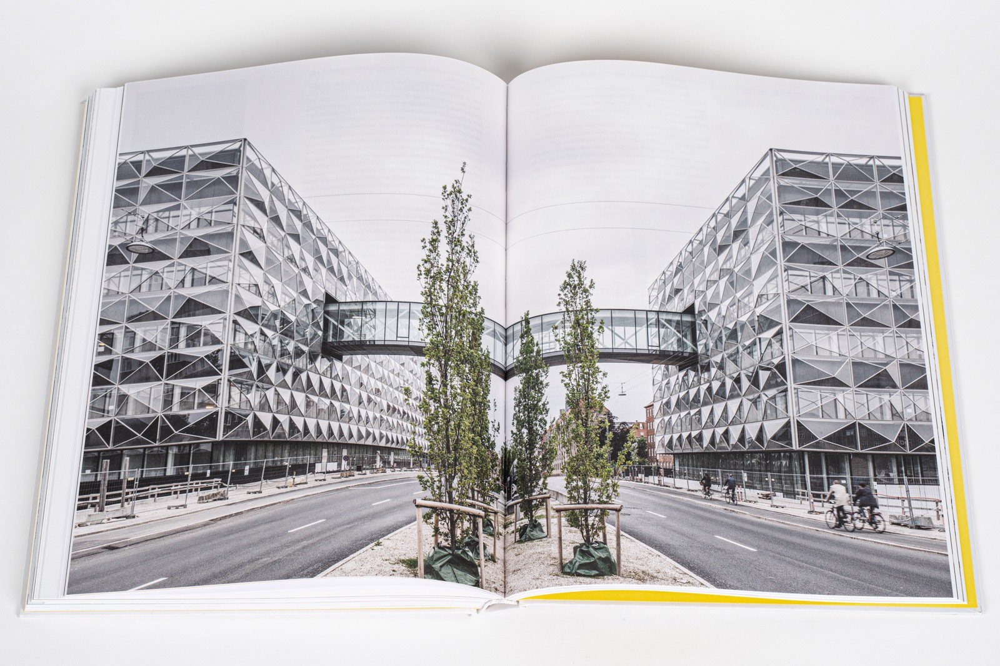
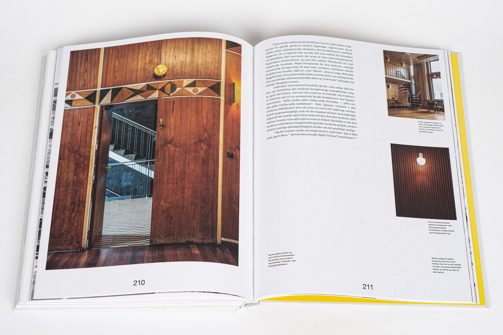
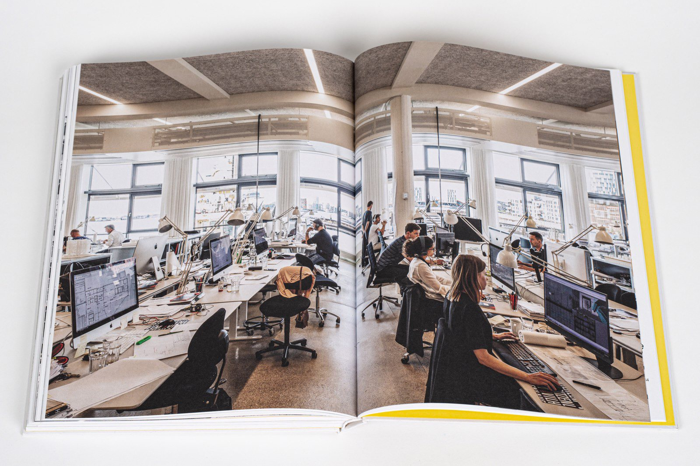
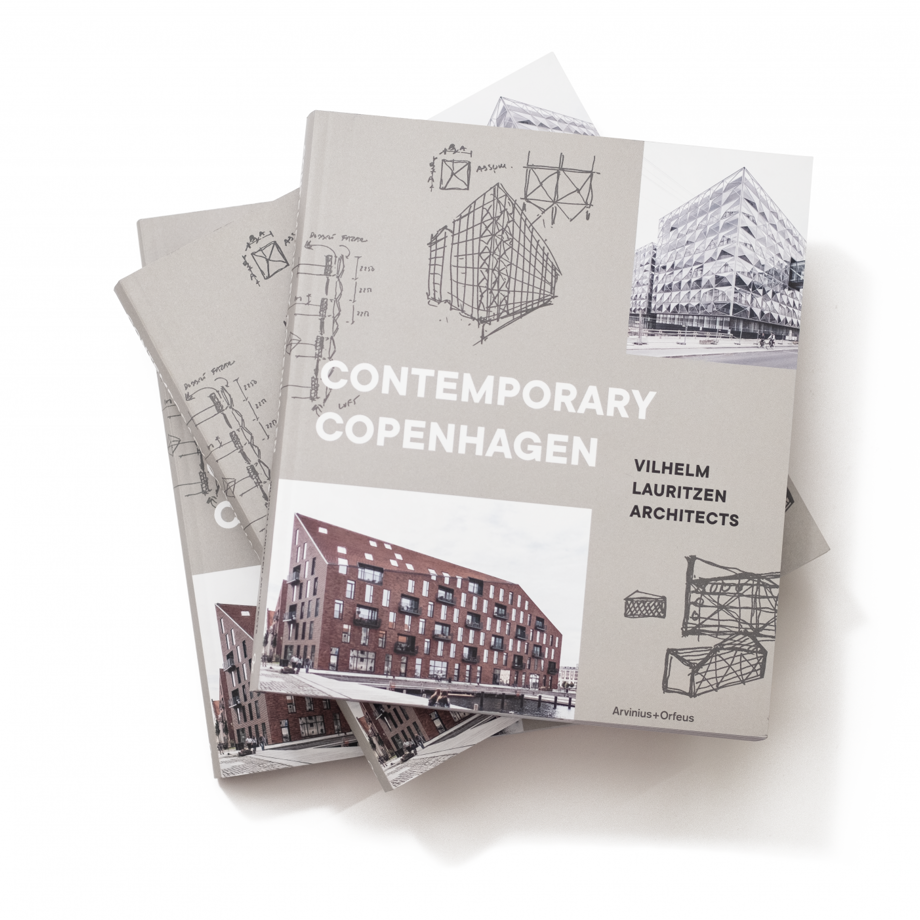
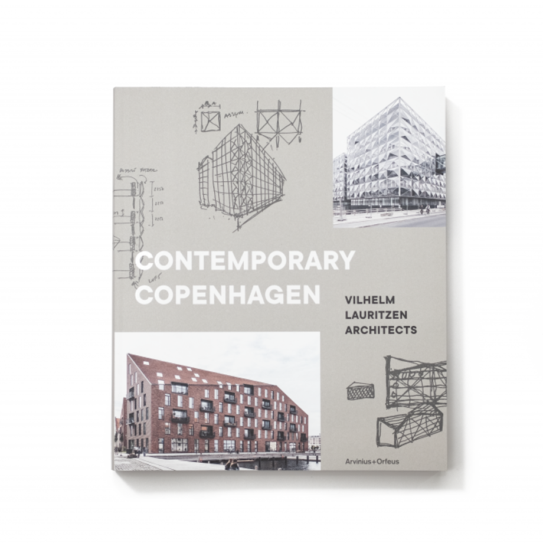
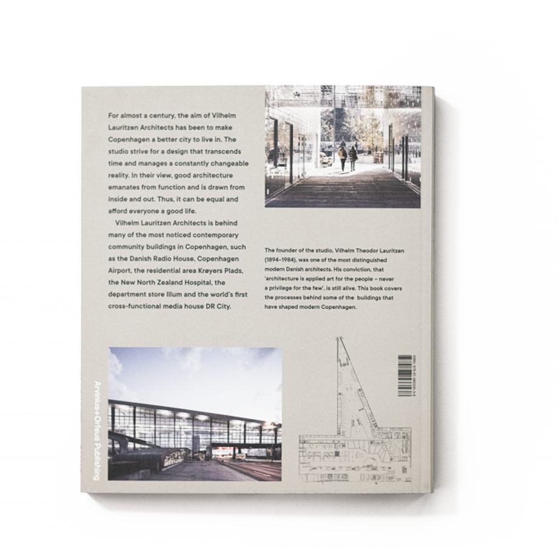
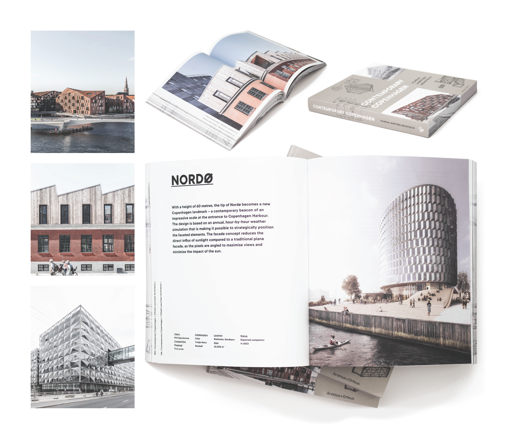